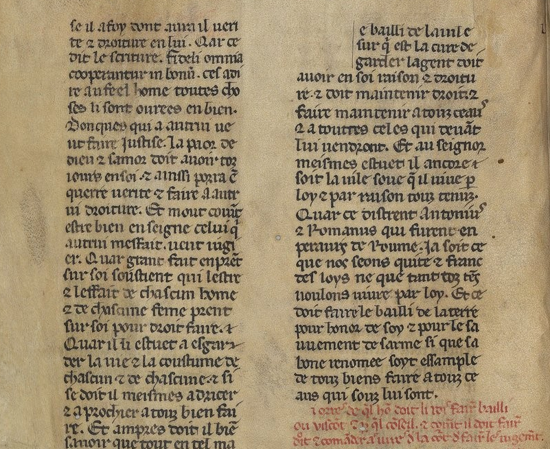
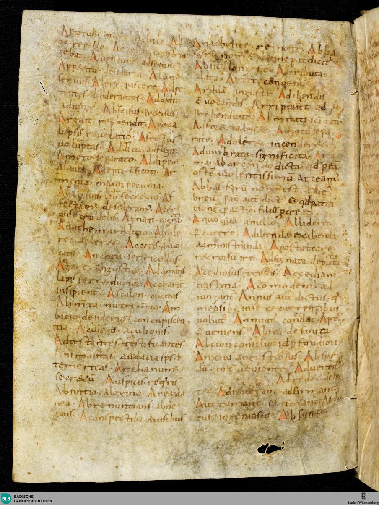
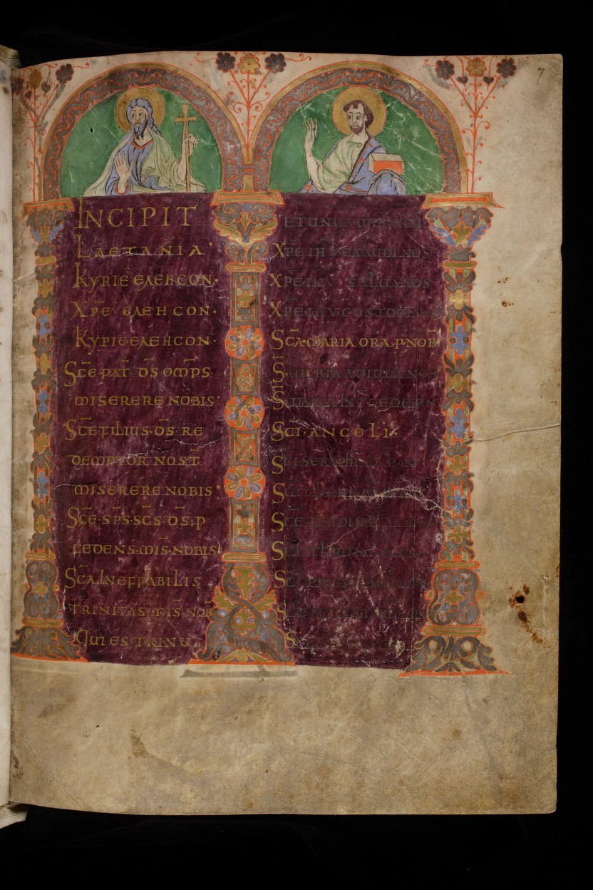

l'Institut de recherche et d’histoire des textes
l'IRHT se consacre à la recherche fondamentale
sur les manuscrits médiévaux et les imprimés anciens.
L’Institut de recherche et d’histoire des textes (IRHT), unité propre de recherche du CNRS (UPR 841), se consacre à la recherche fondamentale sur les manuscrits médiévaux et les imprimés anciens. L’histoire des textes écrits dans les principales langues de culture du pourtour méditerranéen, latin, langues romanes, hébreu, grec, copte, syriaque, arabe, y est traitée dans tous ses aspects : supports matériels de l’écrit, écriture et décoration, contenu textuel, iconographie, diffusion et réception.
Centre de renommée internationale, l’IRHT réunit des spécialistes dans tous les champs de l’histoire érudite des écritures, des livres, des bibliothèques, des textes et de l’art de l’enluminure. Leurs enquêtes philologiques, lexicographiques, historiques, paléographiques et codicologiques ont pour objectifs de dater et localiser les manuscrits, d’identifier et établir les textes qu’ils véhiculent, de préparer l’édition critique des textes et de reconstruire l’histoire de leur production, de leur circulation, de leur audience et de leurs usages de l’Antiquité au début de la Renaissance. Elles donnent lieu à la production de nombreux instruments de travail mis à la disposition de tous les chercheurs.
A partir de ce portail il est possible d'accéder à de nombreuses ressources électroniques:
- Medium, recense tous les manuscrits disponibles (à n'utiliser qu'en cas de recherche très précise).
- La Bibliothèque virtuelle des manuscrits médiévaux (BVMM), permet la consultation de manuscrits du Moyen Âge au XVIe siècle (attention! Dans certains cas on ne peut accéder qu'aux décors enluminés).
- Comparatio, portail de recherche sur le chant liturgique médiéval.
- Fama, base de données des textes les plus lus au Moyen-Âge latin renseignant le nombre de témoins subsistants des ouvrages.
- Initiale, catalogue informatisé de manuscrits enluminés du Moyen Âge.
- Iter Liturgicum italicum, répertoire des manuscrits liturgiques italiens.
- Jonas, répertoire des textes et manuscrits médiévaux en langues d'oc et d'oïl.
- Pinakes, base de données qui rassemble la tradition manuscrite des textes grecs antérieurs au XVIe siècle.
- Onomasticon Arabicum, rassemble les noms propres et biographies des personnages identifiés dans les sources arabes antérieures au XVIIIe siècle.
TELMA
Traitement électronique des manuscrits et des archives
TELMA est une plate-forme de services et de diffusion pour l'édition électronique de corpus de sources primaires et d'instruments de recherche nécessaires à leur exploitation.
Ce portail donne surtout accès à des récensions de chartes et cartulaires:
- Actes royaux, recense les actes royaux de la période Médiévale (pour l'instant cela concerne les règnes de Philippe III le hardi et Philippe IV le bel).
- Callythea, met à disposition du public des textes poétiques de l’époque hellénistique, qui évoquent ou relatent un épisode mythologique.
- Cartulaire de Nesle. Il s'agit d'un des rares cartulaires laïques conservés pour l'espace français. Compilé entre 1269 et 1282.
- CartulR, consiste en une base de données évolutive dédiée aux cartulaires manuscrits. L’aire couvre principalement la France et la Belgique du IXe au XVIIIe s.
- Liturgie, propose une série de notices de manuscrits liturgiques médiévaux et modernes conservés en France.
- chartae-galliae est une base de données des actes écrits relatifs à la France jusqu’à la fin du XIIIe siècle.
- Chartes originales. Cette base de données présente le texte de l’ensemble des chartes originales antérieures à 1121 conservées en France. Existe aussi pour la période 1121-1220.
- Enquêtes menées sous les derniers Capétiens. Edition des enquêtes administratives datant du règne des derniers Capétiens.
- RELMIN constitue une base de données des textes normatifs relatifs au statut juridique des minorités religieuses dans les sociétés chrétiennes et islamiques médiévales.
- Luxury bound présente un corpus de manuscrits illustrés aux anciens Pays-Bas au Bas Moyen Âge.
- Ordonnances. Edition des ordonnances de l’Hôtel du roi.
Hypotheses
Blogs en sciences humaines et sociales
Hypotheses est une plateforme de carnets de recherche en sciences humaines et sociales. Le portail comporte un nombre élevé de blogs.
Quelques uns des blogs les plus intéressant:
- Les carnets du LaMOP. Laboratoire de médiévistique occidentale de Paris (UMR 8589/CNRS).
- Ceeb. Centre européen d’études bourguignonnes XIVe-XVIe siècle.
- Gloses philosophiques à l'ère digitale. Édition numérique d'un corpus de gloses universitaires aux textes d'Aristote (XIIIe siècle).
- ReScript. Carnet de recherche sur la scripturalité médiévale (H37 et PraME).
- Sacra Pagina. Gloses et commentaires de la Bible latine au Moyen Âge.
- Col&Mon. Analyse spatiale et temporelle du phénomène religieux.
- Manuscripta Bibliae Hebraicae.Les manuscrits de la Bible hébraïque en Europe occidentale au XIIe et XIIIe siècles : une approche matérielle, culturelle et sociale.
- Administrer par l'écrit. Classer, contrôler, négocier (XIIIe-XVIIIe siècle).
- Carrières et sarcophages. Production et diffusion des sarcophages de l'Antiquité tardive et du haut Moyen Âge.
- Epimed. Culture écrite médiévale.
- Monde des Djinns. Magie et sciences occultes dans l'Islam médiéval.
- Diwan. Association des Doctorants en Histoire des mondes musulmans médiévaux.
- Pariscope Médiéval. Actualités de la recherche en philosophie médiévale.
- Il ne scet rien qui ne va hors. Voyages et connaissance du monde au Moyen Âge.
- Mondes normands médiévaux. Désignant d’une part l’espace occupé ou colonisé par les Scandinaves aux VIIIe-XIe siècle et de l’autre les territoires qui ont été sous domination normande en France, dans les îles Britanniques et en Méditerranée aux XIe-XIIe siècles.
- FULMEN. Excommunication et autres censures spirituelles, de l'antiquité à nos jours.
Inventaires
Inventaires et archives
Liens vers des sites d'archives et inventaires sur internet.
- Menestrel. Lien vers toutes les archives départementales françaises.
- Archives Nationales. État général des fonds.
- Bibale. Notices de transmission et d'appartenance des manuscrits.
- BNF. Section des manuscrits de la BNF.
- Budé . Informations concernant la transmission des œuvres antiques et médiévales par les manuscrits et les imprimés anciens (fin du Moyen Âge et Renaissance).
- Collecta. Archive numérique de la collection Gaignières (1642-1715) .
- ICCU. Istituto Centrale per il Catalogo Unico delle Biblioteche Italiane e per le informazioni bibliografiche.
- Isidore. Ressources sciences humaines et sociales.
- Kristeller. Latin Manuscript Books before 1600 : a list of printed catalogues and unpublished inventories of extant collections.
- Manuscripta. Le site donne accès à un très grand nombre de notices sur les manuscrits germaniques et aux catalogues allemands numérisés.
- Mirabile. Medievo latino. Bollettino della cultura europea dal secolo VI al XIII.
- Schoenberg. Manuscrits passés dans les ventes publiques.
- staatsbibliothek-berlin. Listage par fonds des 23000 manuscrits présents à Berlin.
Dictionnaires
- Cappelli. Dictionnaire d'abréviations latines pour la paléographie.
- Collatinus. Lemmisateur, analyseur morphologique de textes latins.
- Du Cange. Glossarium ad scriptores mediae et infimae latinitati.
- Gaffiot. Le Gaffiot en ligne.
- Glossaria . Dictionnaire international du latin médiéval (800-1200).
- DMF. Le dictionnaire du Moyen Français.
- DEAF. Dictionnaire étymologique de l'ancien français.
- Menestrel. différents dictionnaires spécialisés (langue d'oïl, langue d'oc, anglo-normand ...).
- TOPO. Dictionnaire topographique de la France.
- Orbis Latinus. Nom de leiux en latin.
- codicologie. Dictionnaire des termes codicologiques.
Documents numérisés
- savoie-archives. Archives de Savoie.
- Internet culturale. Catalogues collections digitales des bibliothèques italiennes.
- Biblioteca Medicea Laurenziana. Bibliothèque Laurentienne de Florence.
- BIBLIOTECA NACIONAL DE ESPAÑA . Bibliothèque digitale d'Espagne.
- bibliotheque-numerique.chambery. Bibliothèque numérique de Chambéry.
- Biblissima. Ce portail vous invite à découvrir l'histoire d'une partie des textes et livres qui ont été écrits, traduits, enluminés, collectionnés ou inventoriés depuis l'Antiquité jusqu'au XVIIIe siècle..
- Gallica. Portail digital de la BNF.
- British Library. Section des manuscripts de la British Library.
- Vatlib. Portail numérique de la Bibliothèque vaticane.
- digitalcollections. Trinity College collection digitale.
- Digital Scriptorium. Ensemble des musées et universités donnant accès aux collections de manuscrits.
- DMM. Collections de manuscrits des musées et universités européennes.
- documentacatholicaomnia. Documents (en pdf) concernant l'histoire de l'Eglise.
- Donum. Dépôts d'objets numérisés de Belgique.
- Codices. Receuil des manuscripts numérisés de Suisse.
- Flandrica. Manuscripts des Flandres.
- Manus. Base de données contenant des descriptions de catalogues et des images numériques de manuscrits, de documents privés et d'archives détenus par des bibliothèques publiques, privées et ecclésiastiques italiennes..
- Manuscripta. Base de données des manuscrits recensés en Autriche.
- manuscriptorium. Rassemblement de manuscripts notamment recensés en République Tchèque.
- manuscriptsonline. Base de données des manuscripts présents en Grande-Bretagne entre 1000 et 1500.
- MMDC. Manuscripts présent dans la région des Pays-Bas jusque 1500.
- DMGH. Version digitale du Monumenta Germaniae Historica.
- Numelyo. Bibliothèque numérique de Lyon.
- Unicaen. Pôle de développement numérique de l'université de Caen.